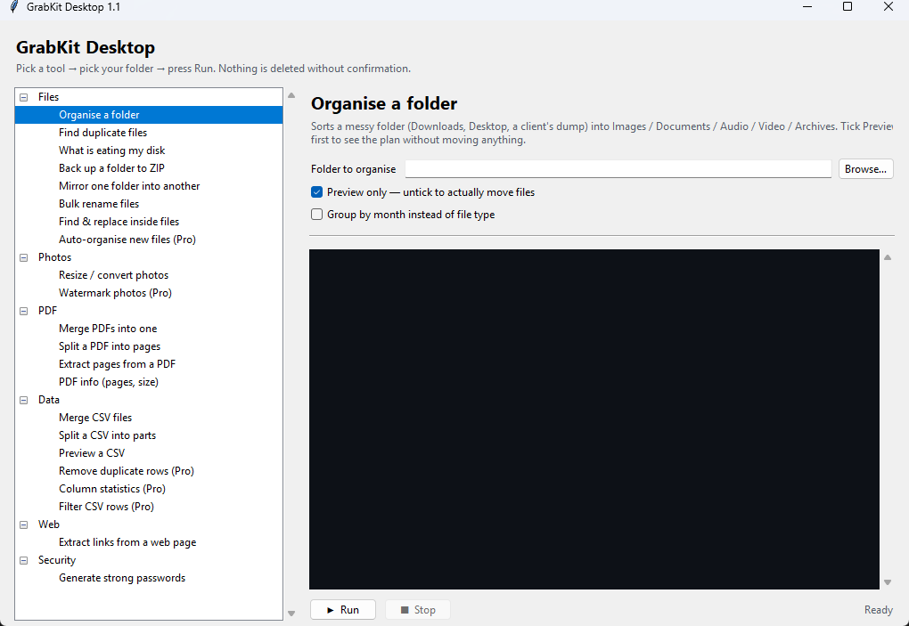

Organize a folder, find duplicates, resize photos, merge PDFs, rename 500 files at once — pick a tool, pick a folder, press Run. Nothing is deleted without your confirmation.
249 ₴ / $9
Intro price for the first 10 buyers · 30-day refund · Windows, Mac, Linux
Order by email Try the free scripts
Sorts Downloads into Images / Documents / Audio / Video / Archives
Compares content, not names, and shows wasted space per group
Sizes of every folder, largest first, plus the 10 biggest files
One timestamped archive that never overwrites an older backup
Prefix, 001-002-003 numbering, lowercase, replace — with preview
Change text across hundreds of files, with automatic .bak copies
One size for a whole folder, originals untouched
Stamps your text on every image for listings and portfolios
Combine several PDFs in the order you choose
One PDF per page, or keep only pages 1-3,7
Merge, split, preview and count — no Excel gymnastics
Drop duplicate rows by key, filter rows, column statistics
Watches a folder and files away whatever lands there
Every link from a page, into a CSV you can work with
Strong passwords generated locally, nothing sent anywhere
Make one folder an exact mirror of another
Start GrabKit.bat — the app opens. If anything does not start, I fix it with you over email.No. The free scripts need a terminal; the paid app does not. You pick from a list, choose a folder with the Browse button, press Run.
Nothing is deleted or overwritten without a confirmation dialog, and most tools show a preview of every change first. Everything runs on your computer; nothing is uploaded.
The scripts are free and stay free — MIT license. You pay for the desktop app, the 4 Pro tools, the plain-language guides and support. If you already use a terminal comfortably, take the free version with a clear conscience.
Email me. If we cannot make it run, I refund you — 30 days, no questions asked.
Yes. Send the folder size and what you need; I quote a fixed price for the job and return the result the same day.
Українською: GrabKit Desktop — 16 інструментів для порядку у файлах, фото та PDF. Все працює на вашому комп'ютері, без інтернету й акаунтів. Ціна 249 ₴, оплата на картку, файл надсилаю на пошту протягом кількох годин. Не підійде — поверну гроші протягом 30 днів. Напишіть на sviatpukas21@gmail.com.
Можу й зробити все за вас: прибирання папки — 499 ₴, фото для оголошень — 299 ₴ за 20 штук.